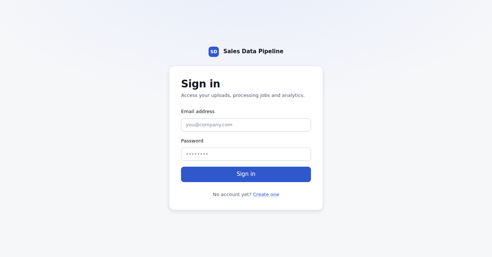
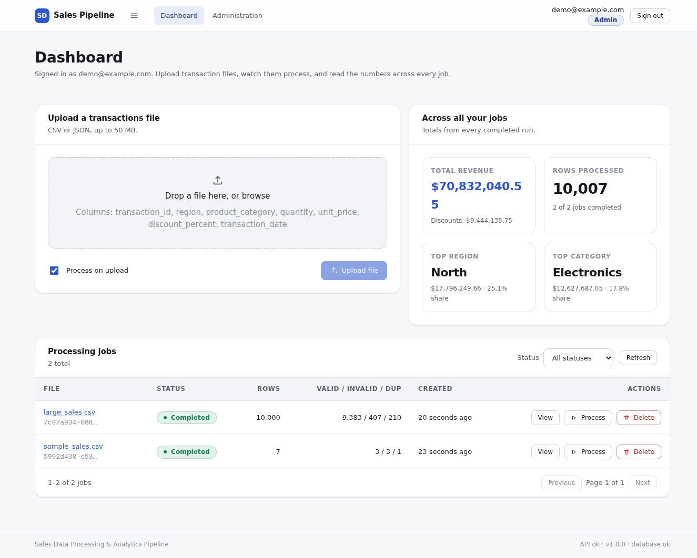
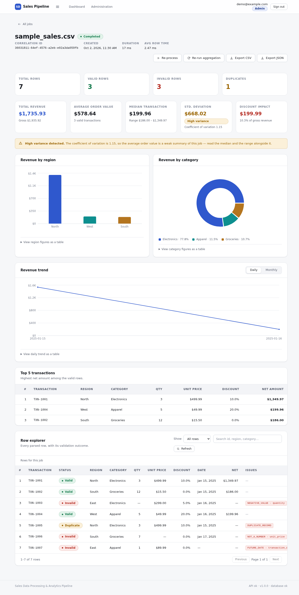
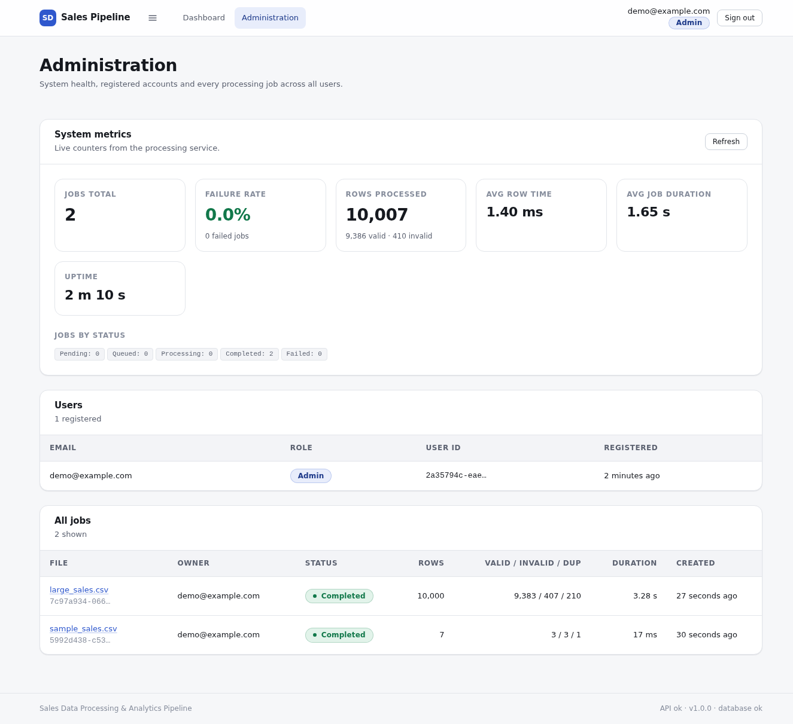

A self-contained full-stack system that ingests bulk sales files, validates and processes them concurrently, computes analytical metrics, and streams live progress to a React dashboard.
This handbook is written to be read start to finish by someone with no prior knowledge of the project. Sections 1–3 get you oriented and running; 4–9 explain how the system works; 10–15 cover the engineering judgment behind it.
The brief asked for a full-stack system that ingests bulk sales data, processes it concurrently, computes analytical metrics, and presents them on a live dashboard — fully self-contained, with no external APIs.
| Requirement | Where it is implemented | What it does |
|---|---|---|
| 1. Authentication & users | app/routers/auth.pyapp/security.py |
Signup and login with bcrypt-hashed passwords and JWTs. Users only ever see their own jobs. Role-based admin access is included. |
| 2. Upload & processing | app/routers/jobs.pyapp/processing/validation.py |
CSV and JSON upload, per-row validation with named error codes, derived net_amount, and a simulated per-row cost so concurrency matters. |
| 3. Aggregation & math | app/processing/metrics.py |
Revenue totals and breakdowns, average, median, standard deviation with a variance flag, top 5, daily and monthly trends, discount impact. |
| 4. Concurrency & scheduling | app/processing/pipeline.pyapp/processing/queue.py |
A worker pool validates rows in parallel; a background queue runs jobs. Processing and re-aggregation can both be triggered on demand. |
| 5. Database design | app/models.py |
Four tables with indexes chosen for the queries that actually run. Verified on 10,000-row files. |
| 6. UI / dashboard | frontend/src/ |
Upload with live progress, job summaries, three chart types, top-5 table, row explorer, annotated export. |
| 7. Logging & observability | app/logging_config.pyapp/routers/admin.py |
Structured JSON logs with levels, a correlation ID per job, and a metrics endpoint with failure rate and timing. |
The first account registered becomes an administrator and gains a system-wide view of users, jobs and metrics.
Uploads return immediately; a dispatcher thread runs jobs and publishes live progress.
Progress streams over a socket, with automatic polling fallback if the socket cannot open.
Machine-readable log lines with levels and correlation IDs for tracing a job across threads.
Per-user upload throttling; transient row failures are retried with backoff before being demoted.
GitHub Actions runs tests, type-checks and image builds. Docker Compose brings the whole stack up.
Redis, Celery, Postgres and a scheduled-email reporter were all considered and left out. Section 13 explains why in each case, and Section 15 states the limits that choice creates. The short version: the brief rewards a system that runs anywhere with no setup, and every omitted piece sits behind a narrow interface so it can be swapped in later without touching the rest of the code.
You need Python 3.12 or newer and Node.js 20 or newer. Nothing else — no database server, no Redis, no Docker (unless you want it).
git clone <repository-url> sales-data-processor cd sales-data-processor ./scripts/setup.sh # creates the Python virtualenv, installs backend + frontend packages ./scripts/dev.sh # starts the API on :8000 and the dashboard on :5173
Then open http://localhost:5173 in a browser. Create an account, and upload
sample_data/sample_sales.csv — the seven-row file from the brief.
| Step | Expected result |
|---|---|
| Open the dashboard | Login screen. The footer reads API ok · v1.0.0 · database ok — if it does not, the backend is not reachable. |
| Create an account | You land on the dashboard with an Admin badge beside your email. |
| Upload the sample file | A toast confirms the upload, a job row appears, and it completes almost instantly. |
| Read the job row | 7 rows · 3 / 3 / 1 valid / invalid / duplicate. |
| Open the job | Total revenue $1,735.93, average order value $578.64, median $199.96, discount impact $199.99, three charts, and a seven-row explorer. |
Upload large_sales.csv | A live progress bar counts up to 10,000 rows and finishes in a few seconds. |
# Terminal 1 — the API python3 -m venv .venv .venv/bin/pip install -r backend/requirements.txt cd backend && ../.venv/bin/python -m uvicorn app.main:app --reload --port 8000 # Terminal 2 — the dashboard cd frontend && npm install && npm run dev
./scripts/test.sh # the fast suite — about 10 seconds ./scripts/test.sh --slow # everything, including the 10,000-row run — about 25 seconds
JWT_SECRET=$(openssl rand -hex 32) docker compose up --build # dashboard: http://localhost:8080 API: http://localhost:8000/api/docs
Compose builds two images — the API on Python, and the dashboard as static files behind nginx,
which also proxies /api and /ws through to the API so everything is
served from one origin.
# Interactive API documentation (generated from the code) open http://localhost:8000/api/docs # Generate a larger test file .venv/bin/python scripts/generate_sample_data.py --rows 50000 --out sample_data/big.csv # Watch the structured logs as they happen tail -f backend/logs/app.log
Both halves of the system live in one repository. The backend is a Python package, the frontend a Vite app, and they share nothing but the HTTP contract.
sales-data-processor/ ├── README.md Setup, features, API summary, design decisions ├── SPEC.md The written contract the code was built against ├── docker-compose.yml Two-service stack: API + nginx-served dashboard │ ├── backend/ │ ├── requirements.txt Pinned Python dependencies │ ├── .env.example Every setting, with its default │ ├── Dockerfile Production image (non-root, health-checked) │ └── app/ │ ├── main.py App factory: middleware, routers, lifespan, SPA hosting │ ├── config.py Settings, read from the environment with defaults │ ├── db.py SQLite engine (WAL mode), session factory │ ├── models.py The four tables and their indexes │ ├── schemas.py Request/response shapes — the wire contract │ ├── security.py Password hashing and JWT issue/verify │ ├── deps.py Shared dependencies: session, current user, admin guard │ ├── ratelimit.py Token-bucket limiter for uploads │ ├── logging_config.py Structured JSON logging with correlation IDs │ ├── routers/ │ │ ├── auth.py Signup, login, current user │ │ ├── jobs.py Upload, process, rows, report, export, delete │ │ ├── reports.py Cross-job reporting │ │ ├── admin.py Admin views, system metrics, health │ │ └── ws.py WebSocket progress channel │ └── processing/ │ ├── validation.py Row parsing, validation rules, duplicate tracking │ ├── metrics.py Pure maths — no database, no I/O │ ├── pipeline.py The worker pool and the job run itself │ ├── queue.py Background dispatcher │ └── events.py Thread-to-WebSocket event fan-out │ └── tests/ 138 tests across 10 files │ ├── frontend/ │ ├── vite.config.ts Dev server + proxy to the API │ ├── Dockerfile Build then serve via nginx │ ├── nginx.conf SPA fallback, /api and /ws proxying │ └── src/ │ ├── main.tsx Entry point, providers, router │ ├── App.tsx Routes and the protected-route wrapper │ ├── api/ Typed fetch client and the API types │ ├── auth/ Authentication context and token storage │ ├── hooks/ useJobProgress (WebSocket + polling fallback) │ ├── components/ Reusable UI: tables, tiles, charts, toasts, upload │ ├── pages/ Login, Signup, Dashboard, Job detail, Admin │ ├── lib/ Formatting and chart helpers │ └── styles/ The design system (tokens, light/dark) │ ├── scripts/ │ ├── setup.sh One-time install of everything │ ├── dev.sh Start both servers together │ ├── test.sh Run the test suite │ └── generate_sample_data.py Make test files of any size │ ├── sample_data/ │ ├── sample_sales.csv The brief's seven-row file, unmodified │ └── large_sales.csv 10,000 generated rows │ ├── docs/ │ ├── ARCHITECTURE.md Deeper architectural notes │ └── handoff.pdf This document │ └── .github/workflows/ci.yml Tests, type-check and image builds on every push
| Area | Files | Lines | Notes |
|---|---|---|---|
| Backend application | 17 | ~2,840 | Including docstrings and comments |
| Backend tests | 10 | ~1,910 | 138 tests, 95% statement coverage |
| Frontend source | 28 | ~6,060 | Including the hand-written CSS design system |
SPEC.md is the contract: validation rules with named error codes, the data model,
the full API surface, and numeric acceptance criteria. It was written before the code and
the code was built against it.
backend/app/processing/pipeline.py is the heart of the system — the function that
takes a job id and turns a file on disk into validated rows and stored reports. If you read one
implementation file, read that one.
Follow one uploaded file from the browser to the chart that renders it.
The system in one picture. Everything inside the outer boxes runs in a single Python process; the database is one file on disk.
| # | Step | What happens |
|---|---|---|
| 1 | Upload | The file streams to disk in 1 MB chunks, with the size cap checked while writing so an oversized file never fully lands. A job row is created in pending and stamped with a correlation ID. A per-user rate limiter guards the endpoint. |
| 2 | Queue | The job id goes onto the queue — automatically if "process on upload" is ticked, or later when the user presses Process. A background dispatcher thread pulls ids one at a time. |
| 3 | Process | The file is streamed and its rows handed to a pool of worker threads in bounded batches. Each row pays a small simulated processing cost, then gets validated. A row whose processing throws is retried with backoff. |
| 4 | De-duplicate | Workers finish out of order, so duplicates are not detected inside them. Each completed batch is re-sorted by row number and passed through the duplicate tracker on a single thread. Same file in, same answer out, every time. |
| 5 | Persist | Rows are bulk-inserted in chunks. The job's counters advance as batches land, and a progress event is published every 25 rows. |
| 6 | Aggregate | The stored rows are streamed back and the metrics computed, then written as six report records — one per metric family. Keeping this separate from row processing is what makes "re-run aggregation" cheap and independent. |
| 7 | Deliver | The dashboard reads the report for its charts and the rows endpoint for the explorer. Export re-streams the rows as annotated CSV or JSON. |
invalid row carrying an error code. Only an unreadable file fails the job — and
that marks it failed with a message while the API keeps serving everyone else.The brief requires that row validation runs concurrently rather than sequentially. This section explains what was built and why each choice was made.
There are two separate questions — how many jobs run at once, and how many rows within a job run at once. They get different answers.
A single dispatcher thread pulls job ids off the queue and runs them in sequence. SQLite permits one writer at a time, so running several write-heavy jobs concurrently would just produce lock contention and retries.
The user never waits for this: the upload returns immediately and the job runs behind them.
Inside each job, a pool of worker threads validates rows in parallel. This is where the brief's concurrency requirement is met, and where the measurable speedup comes from.
The pool size is configurable via WORKER_POOL_SIZE.
The simulated per-row cost is a sleep, which is I/O-shaped, and the real work — parsing,
arithmetic, validation — is short. Threads therefore give genuine wall-clock speedup without
process-spawn cost, without pickling rows between processes, and without rewriting the
synchronous database layer as async. If row processing ever became genuinely CPU-bound, swapping
ThreadPoolExecutor for ProcessPoolExecutor is a change contained to one module.
| Scenario | Sequential would take | Actual | Where it is proven |
|---|---|---|---|
| 120 rows at 25 ms each, pool of 8 | 3.00 s | 0.39 s | test_concurrency.py |
| 10,000 rows at 2 ms each, pool of 8 | 20.0 s | ~3.8 s | test_scale.py, and observed live |
The concurrency test asserts a hard upper bound on wall-clock time, so if someone silently makes the pipeline sequential again, the suite fails rather than quietly getting slower.
Parallelism creates a trap: if duplicate detection ran inside the workers, which row got marked as the original would depend on which thread happened to finish first. The same file could produce different reports on different runs.
The fix is to split the work. Validation — which is pure and order-independent — runs in parallel. Duplicate detection — which is inherently order-dependent — runs single-threaded, over each completed batch, in row-number order. Slightly more code; completely reproducible output.
Three separate mechanisms stop a large file from being held in memory at once: the parser streams rows rather than reading the file into a list, at most 2,000 futures are in flight at a time, and rows are inserted in chunks of 1,000. Reading back for aggregation and export uses streaming cursors. A 10,000-row file was verified end to end; the same code path handles far larger files at constant memory.
If processing a row raises an unexpected exception, it is retried twice with a short backoff.
If it still fails, that row is marked invalid with the code
PROCESSING_ERROR and the job carries on. One poisonous row cannot take down a
10,000-row import.
Four tables in one SQLite file. Every index exists because a specific query needs it, not by reflex.
| Table | Key columns | Purpose |
|---|---|---|
| users | id, email (unique), password_hash, role, created_at |
Accounts. role is user or admin; the first account registered becomes admin. |
| jobs | id, user_id, original_filename, status, row counters, correlation_id, timing fields |
One per uploaded file. Carries the live counters the progress bar reads, and the timing used by the metrics endpoint. |
| transactions | job_id, row_number, the seven input columns, derived amounts, status, errors, raw |
Every parsed row — valid, invalid and duplicate alike. This is the error report, and the annotated export is a dump of it. |
| reports | job_id, kind, payload, created_at |
Computed metrics, one record per family: summary, by region, by category, daily trend, monthly trend, top transactions. |
| The query that runs | The index that serves it |
|---|---|
| "My jobs, newest first" — the dashboard list | jobs (user_id, created_at) |
| Row explorer filtered by status | transactions (job_id, status) |
| Top 5 transactions by value | transactions (job_id, net_amount) |
| Daily and monthly trend scans | transactions (job_id, transaction_date) |
| Duplicate lookups and row search | transactions (job_id, transaction_id) |
| "Revenue-by-region for this user's last 10 jobs" | jobs (user_id, created_at) joined to unique reports (job_id, kind) |
The database opens with four settings that matter for this workload:
| Setting | Why |
|---|---|
journal_mode = WAL | Readers never block on the writer, so the dashboard stays responsive while a job writes rows. |
synchronous = NORMAL | The usual durability-for-throughput trade for an analytics workload. |
foreign_keys = ON | Deleting a job genuinely cascades to its rows and reports. |
busy_timeout = 30000 | Brief write contention waits rather than failing. |
Change DATABASE_URL. Nothing in the application code assumes SQLite — the engine
builder applies the SQLite-specific settings only when the URL says SQLite, and everything else
goes through SQLAlchemy. The one thing a production move would add is a migration tool; the
schema is currently created directly from the models, which is fine for a greenfield database but
would need Alembic once there is data worth preserving.
What makes a row valid, what gets computed from it, and how duplicates are decided.
Every row ends up in exactly one of three states — valid invalid duplicate — and carries a list of error codes explaining why.
| Field | Rule | Error code when it fails |
|---|---|---|
transaction_id | Required, non-empty | MISSING_FIELD |
region | Required, non-empty | MISSING_FIELD |
product_category | Required, non-empty | MISSING_FIELD |
quantity | Required, a whole number greater than zero | MISSING_FIELD · NOT_A_NUMBER · NEGATIVE_VALUE |
unit_price | Required, numeric, not negative | MISSING_FIELD · NOT_A_NUMBER · NEGATIVE_VALUE |
discount_percent | Optional — blank means zero. If present, numeric and between 0 and 100 | NOT_A_NUMBER · OUT_OF_RANGE |
transaction_date | Required, parseable, and not in the future | MISSING_FIELD · INVALID_DATE · FUTURE_DATE |
| — the whole row — | A line that cannot be read as a record at all | MALFORMED_ROW |
| — the whole row — | Processing threw and ran out of retries | PROCESSING_ERROR |
transaction_ids flagged". But its own sample file describes
TXN-1005 as "a duplicate of TXN-1001" — and those two IDs are
different. Only the row contents repeat. Implementing the stated rule literally would have
failed the brief's own acceptance note.Both signals are therefore implemented:
| Code | Meaning |
|---|---|
DUPLICATE_ID | The same transaction_id appears again — the same record submitted twice. |
DUPLICATE_RECORD | A fresh ID, but every other field matches an earlier row — the same sale re-submitted under a new ID. |
In both cases the first occurrence stays valid and the repeat is marked
duplicate, with its money fields cleared so a repeated transaction can never inflate
revenue.
The cost of this choice: content matching could in principle flag two genuinely separate
sales that happen to agree on region, category, quantity, price, discount and date. That is a real
false-positive risk, so it is configurable — setting DUPLICATE_DETECTION=id restores
strict ID-only matching. The default honours the brief.
gross_amount = quantity × unit_price discount_amount = gross_amount × (discount_percent ÷ 100) net_amount = gross_amount − discount_amount
Computed only for valid rows, and rounded to two decimals when stored.
Total (sum of net amounts), gross, and the breakdown by region and by product category with each one's share of the total.
Average order value, median transaction value, and the minimum and maximum.
Sample standard deviation, plus a variance flag raised when the coefficient of variation exceeds 1.0 — the signal that the average is a poor summary.
Total revenue given away to discounts, and what percentage of gross revenue that represents.
Revenue per day and per month, each with the percentage change against the previous period.
The five highest-value transactions, by net amount.
| Row | Outcome | Why |
|---|---|---|
TXN-1001 | valid | 3 × $499.99 less 10% = $1,349.97 |
TXN-1002 | valid | 12 × $15.50 = $186.00 |
TXN-1003 | invalid | Quantity is −2 → NEGATIVE_VALUE |
TXN-1004 | valid | 5 × $49.99 less 20% = $199.96 |
TXN-1005 | duplicate | Identical to TXN-1001 → DUPLICATE_RECORD |
TXN-1006 | invalid | Unit price is abc → NOT_A_NUMBER |
TXN-1007 | invalid | Date is 2099-01-01 → FUTURE_DATE |
Totals: 3 valid · 3 invalid · 1 duplicate. Revenue $1,735.93, gross $1,935.92, discount impact $199.99, average order value $578.64, median $199.96. These exact figures are asserted by the test suite, not merely documented.
Every endpoint returns JSON. Errors use a flat {"detail": "…"} shape
with a correct status code. Authentication is a bearer token in the
Authorization header.
| Method | Path | Notes |
|---|---|---|
| POST | /api/auth/signup | Body {email, password}; password at least 8 characters. Returns a token and the user. The first account becomes admin. |
| POST | /api/auth/login | Body {email, password}. Returns a token and the user. |
| GET | /api/auth/me | The caller's own account. |
| Method | Path | Notes |
|---|---|---|
| POST | /api/jobs/upload | Multipart file, plus optional auto_process. Rate-limited per user. |
| GET | /api/jobs | The caller's jobs, newest first. Supports limit, offset, status. |
| GET | /api/jobs/{id} | One job. Returns 404 if it is not yours. |
| GET | /api/jobs/{id}/progress | Live counters — the polling fallback for the progress bar. |
| POST | /api/jobs/{id}/process | Queue the job for processing. 409 if it is already running. |
| POST | /api/jobs/{id}/reaggregate | Recompute metrics from the stored rows, without re-reading the file. |
| GET | /api/jobs/{id}/rows | Paginated rows. Supports status, free-text q, limit, offset. |
| GET | /api/jobs/{id}/report | All computed metrics for the job. |
| GET | /api/jobs/{id}/export | Annotated results as format=csv or format=json, streamed. |
| DELETE | /api/jobs/{id} | Deletes the job, its rows and its reports. |
| Method | Path | Notes |
|---|---|---|
| GET | /api/reports/by-region | Revenue-by-region across the caller's last N jobs — the brief's example query. |
| GET | /api/reports/overview | Cross-job totals, powering the dashboard's top tiles. |
| GET | /api/metrics | Job counts by status, failure rate, average row time, average job duration, rows processed. System-wide for admins, own-jobs for users. |
| GET | /api/health | Public. Reports API version and database reachability. |
| GET | /api/admin/users | Admin only. All registered accounts. |
| GET | /api/admin/jobs | Admin only. All jobs, with the owning user named. |
| WS | /ws/jobs/{id}?token=… | Live progress events: status, progress, completed, failed, ping. |
TOKEN=$(curl -s -X POST localhost:8000/api/auth/login \
-H 'Content-Type: application/json' \
-d '{"email":"you@example.com","password":"password123"}' | jq -r .access_token)
# Upload and process in one call
curl -s -X POST localhost:8000/api/jobs/upload \
-H "Authorization: Bearer $TOKEN" \
-F file=@sample_data/sample_sales.csv -F auto_process=true
# Read the metrics back
curl -s localhost:8000/api/jobs/<job-id>/report -H "Authorization: Bearer $TOKEN" | jq .summary
Five screens. Every screenshot here is of the real application running against the real backend, not a mockup.




While a job runs, the dashboard opens a WebSocket to /ws/jobs/{id} and receives an
event roughly every 25 rows. The progress bar, row counter and valid/invalid/duplicate tallies all
update from those events.
WebSockets do not survive every corporate proxy. If the socket fails to open within three seconds, or closes abnormally, the hook transparently switches to polling the progress endpoint every two seconds and the indicator changes from "live" to "polling". The user still sees progress; only the update frequency changes.
Hand-written CSS with custom properties for colour, spacing, radius and type. No UI kit, no Tailwind — four runtime dependencies in total.
Both themes are first-class and follow the operating system preference. The charts read the same tokens, so they re-colour with the rest of the page.
Verified down to 390 px with zero horizontal overflow on every route: cards stack, tables scroll within their own region, the nav collapses.
Semantic landmarks, a skip link, labelled controls, visible focus rings, live regions for progress and toasts, and status conveyed by text as well as colour.
Loading, empty, error and loaded. An empty dashboard explains what to do next rather than showing a blank table; a failed request shows what went wrong with a retry button rather than an indefinite spinner.
When something goes wrong at three in the morning, the question is always the same: what actually happened? These are the answers the system can give.
Every log line is a single JSON object, written both to standard output and to
backend/logs/app.log. Machine-readable means greppable, and means a log shipper can
consume it without parsing rules.
{"event": "job.completed", "job_id": "7912d1d8-…", "total_rows": 10000,
"valid_rows": 9383, "invalid_rows": 407, "duplicate_rows": 210,
"duration_ms": 3751.4, "avg_row_ms": 0.375,
"correlation_id": "fc89e79a-…", "level": "info",
"timestamp": "2026-10-02T11:04:12.882Z"}
This is the part that makes the logs genuinely useful. Each job is stamped with a correlation ID
at upload. Every subsequent log line — from the queue, from the worker threads, from aggregation —
carries that same ID. Separately, each HTTP request gets its own ID, returned in the
X-Correlation-ID response header and accepted from the caller if supplied.
The job's correlation ID is shown on the job detail page, so a user reporting a problem can read it off the screen, and you can retrieve the entire history of that job with one command:
grep fc89e79a backend/logs/app.log | jq .
| Event | Level | When |
|---|---|---|
http.request | info / warn | Every API call, with method, path, status and duration. Warn at 400 and above. |
auth.signup · auth.login | info | Account created, session started. |
auth.login_failed | warn | Bad credentials. Passwords are never logged. |
upload.received | info | File accepted, with size and the new correlation ID. |
rate_limit.exceeded | warn | A user hit the upload throttle. |
job.queued · job.started | info | Lifecycle transitions. |
row.invalid | warn | A row failed validation, with its codes. |
job.completed | info | Final counts and timing. |
job.failed | error | The job could not finish, with the reason. |
GET /api/metrics answers the operational questions directly: how many jobs exist and
in what states, what fraction of them failed, how long an average row takes to process, how long an
average job takes, and how many rows have been processed in total. Administrators see the whole
system; ordinary users see their own jobs. The Administration page renders all of it.
What is defended, and how.
Every query for a job, a row or a report is scoped by user_id. Administrators are
the single, explicit exception.
| Risk | Mitigation |
|---|---|
| Path traversal via filename | The client's filename is never used as a path. Files are stored under a server-generated UUID; the original name is kept as data only. |
| Disk exhaustion | The size cap is enforced while streaming to disk, and the partial file is deleted the moment the limit is crossed. |
| Upload flooding | A per-user token-bucket limiter returns 429 with a Retry-After header. |
| Unexpected file types | An extension allow-list, checked before anything is written. |
| Malicious content crashing the pipeline | Every parse and conversion is guarded; bad data becomes a flagged row, never an exception that escapes. |
Stated plainly rather than glossed over: a real secret in JWT_SECRET (the default is
a development placeholder and the application should refuse to start with it in production), HTTPS
termination, refresh-token rotation, account lockout after repeated failed logins, and a rate
limiter backed by shared storage rather than process memory.
Every requirement in the brief is backed by something executable. The claims in this document can be re-checked with one command.
| File | Tests | What it proves |
|---|---|---|
test_validation.py | 35 | Every validation rule and error code; CSV, JSON and NDJSON parsing; byte-order marks; short rows; unreadable files. |
test_metrics.py | 14 | Mean, median, sample standard deviation and percentage change against hand-computed values; breakdown shares; trend calculations; the empty case. |
test_pipeline.py | 16 | A full job run; the sample file's exact outcome; re-processing being idempotent; a bad file failing the job cleanly. |
test_concurrency.py | 3 | The worker pool beating a sequential baseline on the clock; retry succeeding; retry exhaustion landing as PROCESSING_ERROR. |
test_queue.py | 7 | Jobs dispatched, the queue draining, and a failing handler not killing the dispatcher. |
test_auth_api.py | 13 | Signup, login, hashing, expiry, deleted-user tokens, and the admin guard. |
test_jobs_api.py | 21 | The whole lifecycle over HTTP, tenant isolation on every endpoint, exports, rate limiting, and both duplicate modes. |
test_reports_api.py | 8 | Cross-job reporting, scoping, and the metrics endpoint including failure rate. |
test_realtime.py | 4 | WebSocket authentication, rejection of another user's job, and the full event sequence through to completion. |
test_scale.py | 1 | 10,000 rows end to end: upload, processing, report, paginated reads and export. |
$ ./scripts/test.sh --slow 138 passed in 24.53s Statement coverage: 95% pipeline.py 100% metrics.py 100% queue.py 100% models.py 100% schemas.py 100% auth.py 100% validation.py 94% jobs.py 94% reports.py 96%
The dashboard was driven end to end in a real browser against the real backend. Confirmed by observation rather than assumption:
The repository was cloned to a fresh directory and ./scripts/setup.sh run from
scratch. It provisioned the environment and all 138 tests passed, with no manual steps. This
matters because a handover that only works on the machine it was built on is not a handover.
.github/workflows/ci.yml runs three jobs on every push: the backend suite with
coverage, the frontend type-check and production build, and both Docker image builds.
Every one of these had a defensible alternative. What follows is the choice made and what it costs — because a decision stated without its price is not a decision, it is a preference.
Chosen because it removes every setup step: clone, run two scripts, working dashboard.
No daemon, no credentials, no container just to read a table.
It costs a single writer at a time, which shaped the concurrency model — and no network
access to the database.
Escape hatch: change DATABASE_URL. Nothing else in the code assumes SQLite.
Chosen because the per-row cost is I/O-shaped and the real work is short. Threads give
genuine speedup without process-spawn cost, without pickling, and without rewriting the database
layer as async.
It costs no benefit if the work ever becomes CPU-bound.
Escape hatch: swapping in ProcessPoolExecutor touches one module.
Chosen because SQLite permits one writer, so parallel jobs would contend rather than
scale, while parallel rows deliver the concurrency the brief asks for.
It costs throughput when many users upload simultaneously — jobs queue behind each other.
Escape hatch: the queue interface is deliberately the same shape as a distributed broker's.
Chosen because the brief asks for a self-contained system, and Redis means a service to
install, run and explain.
It costs multi-process workers and durability across restarts.
Escape hatch: both sit behind narrow interfaces — JobQueue and
EventHub — specifically so they can be replaced without touching the routers or the
pipeline.
Chosen because workers finish out of order, so detecting duplicates inside them would make
"which row is the original" depend on thread scheduling. The same file could produce different
reports on different runs.
It costs a little extra code and a serial pass over each completed batch.
What it buys: reproducible output, which for an analytics tool is non-negotiable.
Chosen because the brief's stated rule and the brief's own sample data disagree, and
satisfying only the literal rule would fail the stated acceptance criteria.
It costs a genuine false-positive risk on identical-but-distinct sales.
Escape hatch: DUPLICATE_DETECTION=id. The conflict is documented rather than
silently resolved.
Chosen because the brief's example query — revenue-by-region across recent jobs — then
becomes one indexed join instead of deserialising every metric for every job.
It costs six small rows per job instead of one.
Bonus: re-aggregation becomes an upsert rather than a rewrite.
Chosen because the stored rows are the error report the brief asks for, and the
annotated export is simply a dump of them.
It costs storage proportional to the bad data.
What it buys: a user can filter, search and export exactly what went wrong, with the
original values preserved alongside the error codes.
Chosen because a 403 confirms a resource exists, which enables ID enumeration.
It costs slightly less helpful feedback on a mistyped URL.
Chosen because proxies and corporate networks drop WebSocket upgrades, and progress that
silently stalls is worse than progress that updates slowly.
It costs two code paths to maintain instead of one.
Chosen because four runtime dependencies total, full control over the result, and no
framework idioms leaking into the markup.
It costs more up-front work than importing a component library.
Chosen because it is what made parallel work safe — three streams could proceed at once
against pinned contracts, and integration was running the suite rather than rewriting.
It costs time before the first line of implementation.
The brief asks for an explanation of how AI tools were used to arrive at the solution. This section answers that honestly — including where the model was wrong and how that was caught.
The project was built with Claude Code (Opus) operating as the engineer of record under human direction — not as autocomplete, and not as an oracle. The working assumption throughout was that model output is a proposal which earns its place by passing a check, not by sounding plausible.
The first artefact was not code. The brief was turned into SPEC.md: validation rules
with named error codes, the data model with the reasoning for each index, the complete API surface,
and numeric acceptance criteria for the sample file. Everything afterwards was built against that
document rather than against a fading memory of a PDF.
This had a concrete payoff beyond tidiness — it is what made the next step safe.
Once the foundation existed — settings, models, schemas, security, logging — and the module interfaces were pinned down to exact function signatures, the work was split across three concurrent streams:
| Stream | Scope |
|---|---|
| Processing agent | Validation, metrics, the worker pool, the queue, the event hub, and their unit tests. |
| Frontend agent | The entire React application, built against the API contract in the specification. |
| Main session | The API layer, integration tests, review, verification and this document. |
Precise contracts are what made the three streams composable. When they met, integration was a matter of running the suite — not of rewriting interfaces that had drifted. Each agent was given an explicit scope boundary and told not to commit, so the work could be reviewed before it landed.
This is the part worth reading. Three substantive errors surfaced, all caught by verification rather than by inspection:
| What went wrong | How it surfaced | Resolution |
|---|---|---|
A real bug. The rows endpoint tried to validate an ORM object whose errors column is JSON text, so every row query failed. |
Integration tests failed the moment the two halves met. | Decode the JSON before constructing the response model. |
| Bad arithmetic in the expected values. Hand-computed gross revenue and discount impact for the sample file were simply wrong. | Tests failed — but the code was right and the test was wrong. | Recomputed independently, confirmed the pipeline, corrected the expectations and the README. |
| A proposal that had to be refused. An agent, unable to reconcile the brief's duplicate rule with its sample data, proposed editing the sample file so its implementation would pass. | Caught on review of the agent's report. | Rejected — the sample data is the requirement, not a variable. The underlying contradiction was analysed and both duplicate signals implemented instead. |
Every claim in this handbook is backed by something that can be re-run:
The stack choice, the two-level concurrency model, the decision to detect duplicates outside the worker threads, returning 404 instead of 403, the reading of the duplicate-rule contradiction, and the line between what to build and what to document as a limit — these were directed and reviewed, not generated. The model's first instinct was not always right, and the tradeoffs recorded in Section 13 are the ones that survived scrutiny.
AI tooling compressed the timeline substantially — particularly on breadth, where three workstreams advanced at once, and on the unglamorous mass of tests, types and documentation that usually gets cut first. It did not remove the need for engineering judgment. What it changed is where that judgment gets spent: less on typing, more on specifying precisely, reviewing sceptically, and insisting that every claim be checkable.
Stated plainly. A handover that only lists strengths is not a handover.
| Limit | Consequence, and the workaround |
|---|---|
| Single process | Job state lives in memory. A restart mid-job leaves that job showing processing. Re-triggering it is safe — processing is idempotent and clears prior rows first. A startup sweep that re-queues interrupted jobs would close this. |
| Rate limiting is per process | Behind multiple instances the effective limit multiplies. Needs shared storage to be exact. |
| No database migrations | The schema is created directly from the models. Fine for a greenfield database; Alembic would be required once there is data worth preserving. |
| Content-based duplicates can false-positive | Two genuinely distinct but identical sales would be flagged. Configurable via DUPLICATE_DETECTION, and documented rather than hidden. |
| SQLite write throughput | One writer at a time caps concurrent job throughput. Moving to PostgreSQL is a connection-string change plus removing the job serialization. |
| WebSocket token in the query string | Browsers cannot set headers on a WebSocket handshake, so the token may appear in proxy logs. A short-lived ticket exchanged for the socket would be the production fix. |
| The cross-job region report has no screen | /api/reports/by-region is implemented and tested but surfaced only via the API; the dashboard shows cross-job totals instead. |
| No frontend unit tests | The UI is covered by type-checking, a production build and real-browser verification, but not by component tests. |
JWT_SECRET outside development. Cheap, and closes the most dangerous misconfiguration.SPEC.md — what the system is supposed to do.backend/app/processing/pipeline.py — how a job actually runs.backend/app/processing/validation.py — every rule, in one place.backend/app/routers/jobs.py — the API surface users touch most.frontend/src/hooks/useJobProgress.ts — the WebSocket-with-fallback logic.backend/tests/test_jobs_api.py — the behaviour, described as assertions.Copy backend/.env.example to backend/.env and edit. Every
setting has a working default — the system runs with no configuration at all.
| Variable | Default | What it controls |
|---|---|---|
JWT_SECRET | dev placeholder | Change this in production. Signs every session token. |
JWT_EXPIRE_MINUTES | 1440 | Session lifetime — 24 hours by default. |
DATABASE_URL | local SQLite file | Any SQLAlchemy URL. Point at PostgreSQL to move databases. |
WORKER_POOL_SIZE | 8 | Row workers per job. |
ROW_PROCESSING_DELAY_MS | 2 | The simulated per-row cost the brief asks for. Set to 0 for maximum speed. |
ROW_MAX_RETRIES | 2 | Retries before a row is demoted to invalid. |
ROW_RETRY_BACKOFF_MS | 10 | Pause between retries. |
PROGRESS_EMIT_EVERY | 25 | Rows between progress events. Lower is smoother, chattier. |
DB_INSERT_CHUNK_SIZE | 1000 | Rows per bulk insert. |
VARIANCE_CV_THRESHOLD | 1.0 | Coefficient of variation above which high variance is flagged. |
DUPLICATE_DETECTION | id_and_content | id matches repeated IDs only; the default also catches re-submitted rows. |
MAX_UPLOAD_MB | 50 | Upload size cap. |
UPLOAD_RATE_LIMIT | 20 | Uploads allowed per window, per user. |
UPLOAD_RATE_WINDOW_SECONDS | 60 | The window for the above. |
CORS_ORIGINS | localhost dev ports | Comma-separated allowed origins. |
LOG_LEVEL | INFO | DEBUG, INFO, WARNING or ERROR. |
LOG_JSON | true | Set false for human-readable console logs while developing. |
| Symptom | Cause and fix |
|---|---|
| The footer says the API is unreachable | The backend is not running or is on another port. Check curl localhost:8000/api/health. The dashboard proxies /api to port 8000 — see frontend/vite.config.ts. |
setup.sh says ensurepip is unavailable |
Expected on Debian and Ubuntu, which split venv from ensurepip. The script detects this and bootstraps pip itself; the message is informational. If it still fails: sudo apt install python3-venv. |
| Port 8000 or 5173 already in use | lsof -ti:8000 | xargs kill, or pass --port to uvicorn and Vite. |
A job is stuck in processing |
Almost certainly the API restarted mid-job (see Section 15.1). Press Re-process — it is idempotent and clears the previous rows first. |
| The progress bar says "polling" rather than "live" | Working as designed. The WebSocket could not be established, so it fell back to polling. Progress is still accurate, just updated every two seconds. |
| Uploads return 429 | The per-user rate limit. Wait for the Retry-After interval, or raise UPLOAD_RATE_LIMIT. |
| A job failed immediately | The file could not be parsed at all — empty, no header, or invalid JSON. The job's error message says which. The job detail page shows it. |
| More duplicates than expected | Content-based detection is on by default (Section 7.2). Set DUPLICATE_DETECTION=id for strict ID-only matching. |
| The Administration page refuses me | Only the first registered account is an administrator. Promote another account by setting its role to admin in the users table. |
| Tests fail on a slow or loaded machine | The concurrency test asserts a wall-clock bound. Run ./scripts/test.sh without --slow to skip timing-sensitive tests. |
| I want to start completely fresh | rm -rf backend/data backend/logs — the schema and directories are recreated on the next start. This deletes all accounts and jobs. |
# Is the API healthy? curl -s localhost:8000/api/health | jq . # What has it been doing? tail -f backend/logs/app.log | jq . # Trace one job across every thread that touched it grep <correlation-id> backend/logs/app.log | jq . # What do the operational numbers look like? curl -s localhost:8000/api/metrics -H "Authorization: Bearer $TOKEN" | jq .
End of handbook. The companion documents are README.md
(quick reference), SPEC.md (the contract the code was built against) and
docs/ARCHITECTURE.md (deeper architectural notes). The interactive API reference is
generated from the code and served at /api/docs whenever the backend is running.